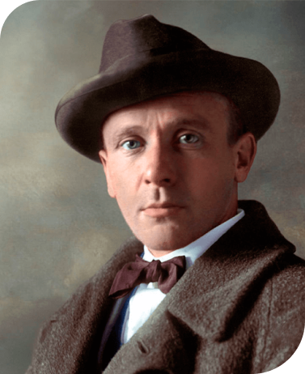

Михаил Афанасьевич
Булгаков

Михаил Булгаков - выдающийся русский писатель и драматург, чьи произведения сочетают в себе глубокие философские мысли, художественное мастерство и яркий юмор. Он является автором ряда великих произведений, которые оставили неизгладимый след в мировой литературе.
Наиболее известными произведениями Михаила Булгакова являются: "Мастер и Маргарита", "Белая гвардия", "Дьяволиада", "Собачье сердце".